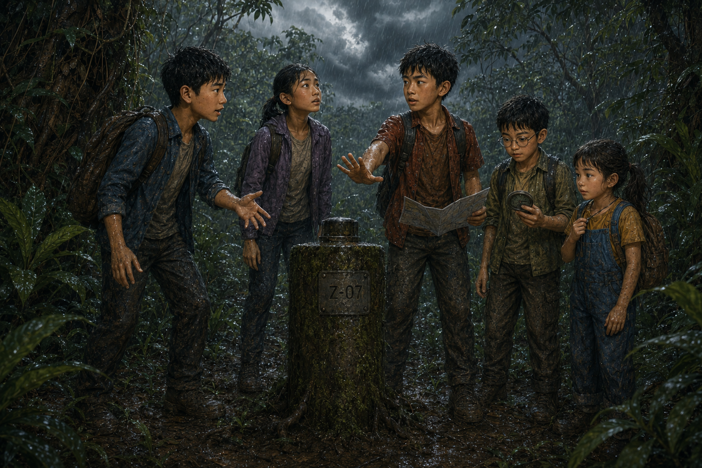
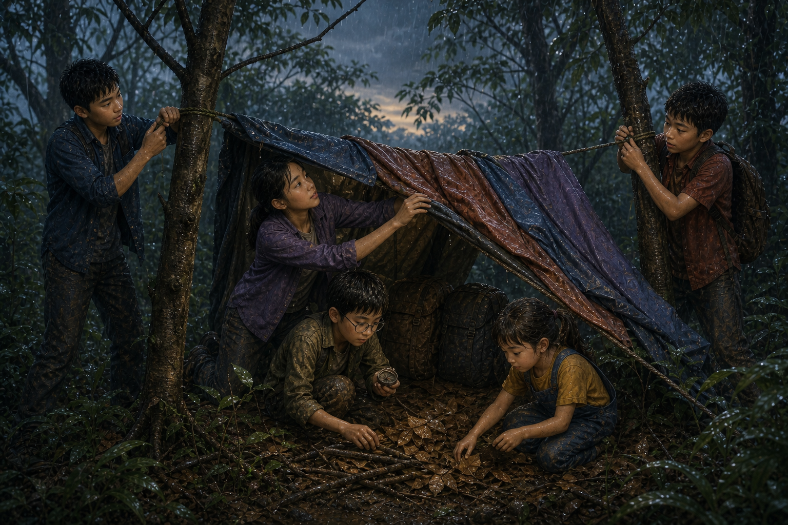

ก่อนฟ้าจะมืด
เวลาอ่านประมาณ 15 นาที · Survival / Science / Mystery

เสา Z-07 กลับเงียบลง แต่ความลึกลับเพิ่งเริ่มต้น
ปี๊บ!
ไฟสีแดงบนเสาโลหะกะพริบหนึ่งครั้ง จากนั้นเสียงเครื่องจักรที่ดังมาจากใต้พื้นดินก็ค่อย ๆ เบาลง
ครืนนนน... ครืน...
แล้วเงียบสนิท
เด็กทั้งห้ายืนนิ่งอยู่กลางสายฝน
ต้นกล้าเป็นคนแรกที่พูดขึ้น “ผมว่า...เราควรขุดดู”
นนท์หันขวับ “ขุดอะไร?”
“ก็ขุดตรงนี้ไง เสียงมันมาจากข้างล่าง ถ้ามีฐานลับอยู่ใต้ดินจริง ๆ—”
“เรามีเชือก เข็มทิศ ขวดเก็บน้ำ แล้วก็นกหวีด” มีนาพูด “ไม่มีพลั่ว”
ต้นกล้าหยุดคิด “ใช้มือก็ได้”
“ไม่ได้” นนท์ มีนา และปั้นพูดพร้อมกัน
ฟ้าหัวเราะ แต่แล้วเสียงฟ้าร้องก็ดังขึ้นเหนือศีรษะ
1
นนท์เงยหน้ามองท้องฟ้า แม้มองผ่านยอดไม้ เขาก็เห็นว่าแสงรอบตัวเปลี่ยนไปแล้ว
“กี่โมงแล้ว?” เขาถาม
ปั้นดูนาฬิกา “บ่ายสามโมงสี่สิบเจ็ด”
ต้นกล้าทำหน้าประหลาดใจ “แค่บ่ายสามเอง ทำไมมืดขนาดนี้”
“เพราะเมฆฝน” มีนาตอบ “แล้วเราอยู่ในป่าด้วย แสงลงมาถึงพื้นน้อยกว่าอยู่ในที่โล่ง”
นนท์มองแผนที่อีกครั้ง บริเวณที่พวกเขายืนอยู่ยังคงเป็นพื้นที่สีเขียวว่างเปล่า ไม่มีเส้นทาง ไม่มีอาคาร และไม่มีคำว่า Z-07
“เราต้องกลับไปหาครู” นนท์พูด
ต้นกล้าชี้ลงพื้น “แล้วอันนี้ล่ะ?”
ไฟบนเสาโลหะดับไปแล้ว เหลือเพียงเสาเก่า ๆ ที่ดูเหมือนถูกทิ้งไว้มานาน
“เราจำตำแหน่งไว้ก่อน พรุ่งนี้ถ้าครูพากลับมา เราค่อยดู”
ปั้นพูดเบา ๆ “ถ้าเราออกจากป่าได้ก่อนนะ”
ต้นกล้าบ่น “นายไม่จำเป็นต้องพูดทุกอย่างที่คิดก็ได้นะปั้น”
พวกเขาลองย้อนกลับทางเดิม แต่เดินไปได้ไม่ถึงห้านาที เสียงน้ำก็ดังขึ้นเรื่อย ๆ
ร่องดินเริ่มมีน้ำสีน้ำตาลไหล มีนาหยุดแล้วชี้ไปข้างหน้า “ถ้าเราเดินลงไป น้ำก็จะไหลไปทางเดียวกับเรา แล้วลำธารข้างล่างกำลังมีน้ำป่า”
นนท์มองทางลาด “เราไม่ควรลงไปใกล้น้ำตอนนี้”
2
“งั้นทำอะไร?” ต้นกล้าถาม
“ส่งสัญญาณก่อน” นนท์ตอบ
ทุกคนหันไปมองฟ้า ฟ้ากอดนกหวีดไว้กับอก “ในที่สุด!”
ปี๊ดดดดดด!
ต้นกล้าเอามือปิดหู “ดังเกินไป!”
ฟ้าดึงนกหวีดออกจากปาก “ก็มันคือนกหวีด”
พวกเขารอ ไม่มีเสียงตอบกลับ มีเพียงฝน ใบไม้ และน้ำจากที่ไกล ๆ
นนท์หยิบโทรศัพท์ออกมา ไม่มีสัญญาณ ต้นกล้าก็ไม่มีเหมือนกัน
“แบตผม 43%”
“ของเรา 61%” มีนาบอก
“อย่าเปิดหน้าจอเล่น เก็บแบตไว้” นนท์เตือน
ฟ้าชะโงกมองต้นกล้า “เมื่อกี้พี่เปิดเกมอยู่”
ต้นกล้ากดปิดหน้าจอ “ผมแค่ตรวจสอบว่าเกมยังอยู่”
ฝนเริ่มเบาลง แต่ลมกลับแรงขึ้น
ฟ้ากอดแขนตัวเอง “หนาว”
มีนาบีบแขนเสื้อ น้ำหยดลงพื้น “ตอนตัวเราเปียก น้ำจะดึงความร้อนออกจากตัวเร็วกว่าตอนแห้ง แล้วลมก็ทำให้เย็นเร็วขึ้นอีก”
ต้นกล้าส่ายหน้า “ผมไม่หนาว”
ลมพัดผ่าน เขาตัวสั่นทันที
ฟ้ามอง “เมื่อกี้อะไรสั่น?”
“กระเป๋า”
“พี่ไม่ได้สะพายกระเป๋า”
“...พื้นสั่น”
3
นนท์เริ่มกังวล พวกเขาไม่รู้ตำแหน่งแน่นอน กลับทางเดิมไม่ได้ ไม่มีสัญญาณ ฝนยังไม่หยุด และกำลังจะมืด
“เราต้องหาที่พักก่อนมืด” เขาพูด
พวกเขาตกลงว่าจะไม่เดินไกลจากเสา Z-07 จนจำทางกลับไม่ได้ และไม่นานก็พบสถานที่สามแห่ง
แห่งแรก อยู่ใต้ต้นไม้สูงมาก พื้นค่อนข้างแห้ง แต่เหนือหัวมีกิ่งไม้ใหญ่แกว่งตามลม และมีกิ่งแห้งตกอยู่เต็มพื้น
แห่งที่สอง เป็นร่องกว้างระหว่างเนินสองด้าน พื้นเรียบ มีทรายและกรวด แต่มีนาสังเกตว่าลักษณะพื้นเหมือนทางน้ำเก่า
แห่งที่สาม อยู่บนเนินเตี้ย สูงกว่าร่องน้ำ ไม่มีต้นไม้ใหญ่โดดเด่นเพียงต้นเดียว และพื้นเอียงพอให้น้ำไม่ขัง แม้จะเปียกและไม่น่าสบายที่สุด
🧠 จุดให้คิดประจำตอน
ถ้าเป็นสมาชิกทีม ZERO เราจะเลือกพักตรงไหน?
A. ใต้ต้นไม้ใหญ่ เพราะพื้นแห้งที่สุด
B. ร่องพื้นทราย เพราะพื้นเรียบและนอนได้ง่าย
C. เนินเตี้ยที่สูงกว่าทางน้ำ ไม่มีต้นไม้ใหญ่หรือกิ่งแห้งอยู่เหนือหัว แม้พื้นจะเปียกกว่า
ลองเลือกก่อนอ่านต่อ
4
“C” ปั้นตอบ มีนาและฟ้าก็เลือกเหมือนกัน สุดท้ายต้นกล้ายอมตามทีม
สิ่งที่ดูสบายที่สุด ไม่จำเป็นต้องปลอดภัยที่สุด ใต้ต้นไม้ใหญ่เสี่ยงจากกิ่งแห้ง ส่วนร่องทรายอาจกลายเป็นทางน้ำเมื่อฝนหนัก
พวกเขาเลือกเนินเตี้ย แล้วใช้เชือกกับเสื้อกันฝนสองผืนทำหลังคาเล็ก ๆ เอียงให้น้ำไหลออกด้านหลัง
มีนาบอกว่าไม่ควรนั่งติดดินโดยตรง เพราะพื้นดินเย็นกว่าและจะดึงความร้อนออกจากร่างกาย เด็ก ๆ จึงช่วยกันปูใบไม้แห้ง กิ่งเล็ก และกระเป๋าที่ไม่กลัวเปียกเป็นชั้นรอง
ฟ้าลองแตะพื้นแล้วพูด “วิทยาศาสตร์ทำให้ก้นอุ่นขึ้นได้ด้วย” ทุกคนหัวเราะ

ทีมช่วยกันเลือกพื้นที่สูงและทำที่พักชั่วคราวก่อนฟ้ามืด
5
พวกเขาแบ่งพื้นที่กัน คนที่เปียกมากอยู่ตรงกลาง กระเป๋าวางด้านรับลม โทรศัพท์ทุกเครื่องถูกปิดหรือเข้าโหมดประหยัดพลังงาน
นนท์บันทึกเวลา 16:31 และบอกว่าจะเป่านกหวีดเป็นระยะ แต่จะไม่เดินตามเสียงใด ๆ หากยังไม่แน่ใจ
แสงในป่าลดลงเรื่อย ๆ เสียงนกกลางวันเงียบลง เหลือเสียงแมลง กบ และบางสิ่งเคลื่อนผ่านพุ่มไม้เป็นครั้งคราว
ต้นกล้าถามว่า “พรุ่งนี้เราจะกลับไปดูเสาเหล็กใช่ไหม?”
นนท์ตอบ “ถ้าปลอดภัย”
ปั้นพูดขึ้น “เสียงเครื่องจักรเมื่อกี้ประมาณสิบเอ็ดวินาที ผมจับเวลาไว้”
ต้นกล้าหันมามอง “นายจับเวลาทุกอย่างเลยหรือไง”
“เกือบทุกอย่าง” ปั้นตอบ
ฟ้าถามเบา ๆ “ถ้าเสาอันนั้นเก่ามาก...ไฟมันติดได้ยังไง?”
ไม่มีใครตอบ
6
เวลา 17:02 ปั้นเป่านกหวีดอีกครั้ง
ปี๊ดดดด!
ทุกคนเงียบ
หนึ่งวินาที... สองวินาที... สามวินาที...
ปี๊ดดดด!
ฟ้าลุกพรวด “ครู!”
ต้นกล้าคว้ากระเป๋า “ไป!”
นนท์จับแขนเขาไว้ “เดี๋ยว ฟังก่อน”
เสียงดังอีกครั้ง แต่ไม่ได้มาจากทางลำธาร
ปั้นยกเข็มทิศขึ้น “เหนือ”
ทุกคนมองหน้ากัน เพราะทางเหนือคือทางเดียวกับเสา Z-07
ปั้นมองนาฬิกา “ผมเป่านกหวีดตอน 17:02:14 เสียงตอบกลับตอน 17:02:24”
“สิบวินาที” นนท์พูด
“ครั้งที่สองก็สิบวินาทีพอดี”
ต้นกล้ายักไหล่ “แล้ว?”
ปั้นมองเข้าไปในป่าที่กำลังมืด “ถ้าเป็นคน...ทำไมตอบกลับด้วยระยะเวลาเท่ากันเป๊ะ?”
แล้วเสียงจากในป่าก็ดังขึ้นอีกครั้ง ทั้งที่คราวนี้ไม่มีใครเป่านกหวีด
ปี๊ดดดด!
ไกลออกไประหว่างต้นไม้ มีแสงสีเขียวเล็ก ๆ กะพริบขึ้นหนึ่งครั้ง
ติ๊ด
แล้วดับไป
🔬 วิทยาศาสตร์ในตอนนี้
ตัวเปียก + ลม = สูญเสียความร้อนเร็วขึ้น การหาที่บังฝน ลดลม และไม่สัมผัสพื้นเย็นโดยตรงช่วยรักษาความอบอุ่นได้
การเลือกที่พักควรมองความเสี่ยงรอบตัว ไม่ใช่เลือกเพียงจุดที่แห้งหรือสบายที่สุด เช่น หลีกเลี่ยงร่องน้ำและกิ่งไม้แห้งเหนือศีรษะ